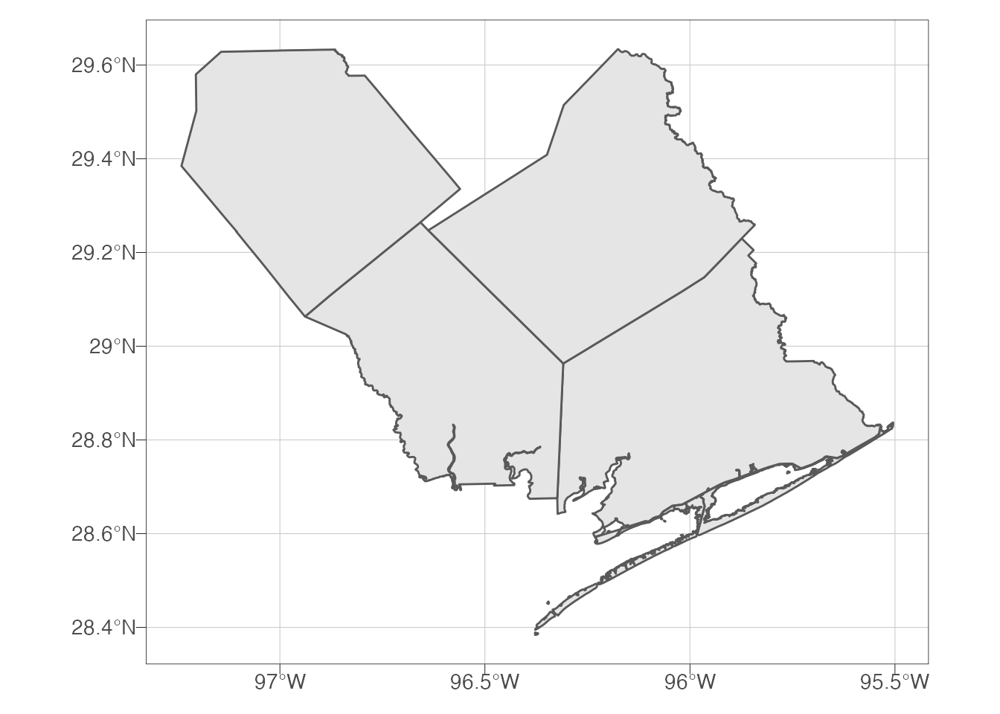
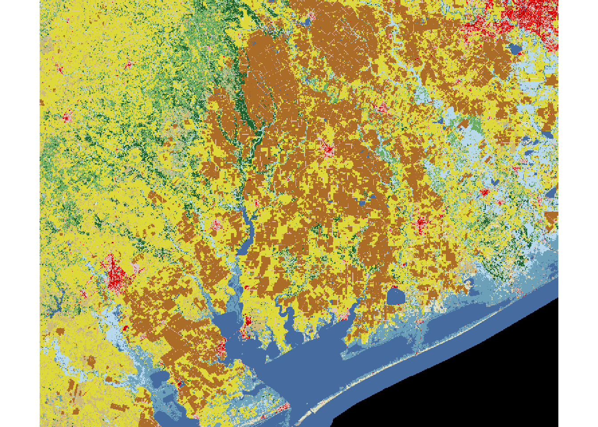
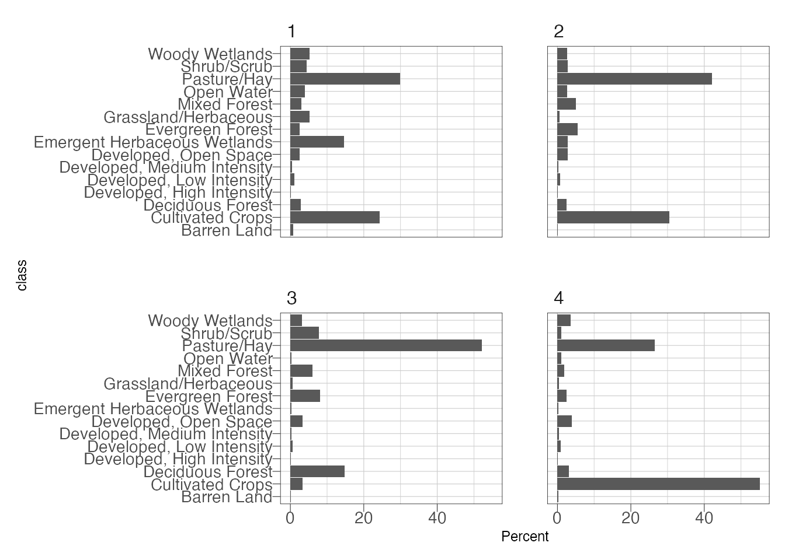
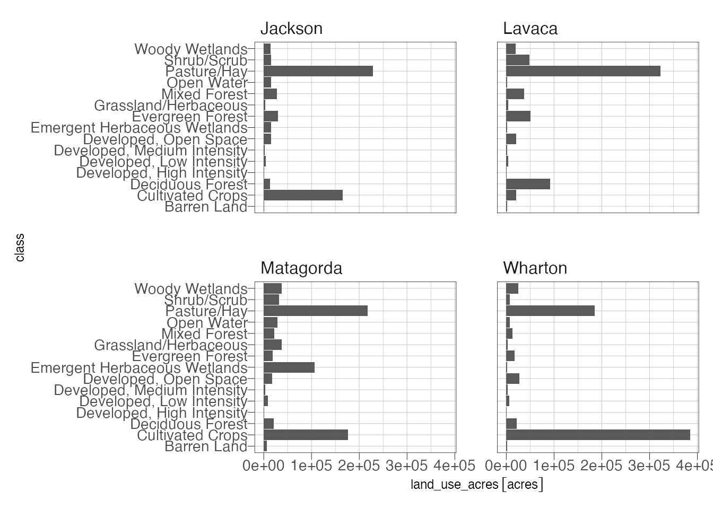

Extract and Summarize NLCD, or Other, Data with Polygons
2020-10-02
Introduction
This will walk you through summarizing the area of different raster classes within one or more polygon features using R. This would be similar to using the Tabulate Area tool in ArcGIS.
Specifically for this example we are going to calculate National Land Cover Dataset (NLCD) class areas in four Texas counties.
Required Libraries
remotes::install_github("ropensci/FedData")library(hrbrthemes) #maybe not required, I use it to pretty my plots
library(FedData) #handy dandy NLCD downloader you need the latest development version from github
library(sf) #main spatial vector package for R## Linking to GEOS 3.8.1, GDAL 3.1.1, PROJ 6.3.1library(raster) #main raster analysis package for R## Loading required package: splibrary(tidyverse) #all the things## ── Attaching packages ─────────────────────────────────────── tidyverse 1.3.0 ──## ✔ ggplot2 3.3.2 ✔ purrr 0.3.4
## ✔ tibble 3.0.3 ✔ dplyr 1.0.2
## ✔ tidyr 1.1.2 ✔ stringr 1.4.0
## ✔ readr 1.3.1 ✔ forcats 0.5.0## ── Conflicts ────────────────────────────────────────── tidyverse_conflicts() ──
## ✖ tidyr::extract() masks raster::extract()
## ✖ dplyr::filter() masks stats::filter()
## ✖ dplyr::lag() masks stats::lag()
## ✖ dplyr::select() masks raster::select()library(units) #handles unit conversions## udunits system database from /Users/runner/work/_temp/Library/units/share/udunitslibrary(ggforce) #plays nice with unitsSomething to note when you load up the tidyverse and raster packages. Both packages have functions called select and extract. The message above notes that those functions from raster have been masked. To be explicit about which function is being called, the syntax is package::function. So for example if I want to use the extract function from the raster package the syntax is raster::extract() to ensure the dplyr specific extract function is not called.
Second, when playing with spatial data in R, you should always explicitly set the coordinate system or projection system. ArcGIS handles on the fly projections that are pretty forgiving when adding data to maps or geoprocessing. However, in R you will generally want all your data in the same projection.
Load Data
We are going to download county geospatial files using data published by TxDOT on their ArcGIS servers (TxDOT – TPP – Data Management TPP-GIS@txdot.gov 2019). Then filter it down to a few counties of interest. We are also going to download the NLCD of the area of interest from federal data repos (Bocinsky 2020; Yang et al. 2018). Figures ?? and ?? but two different reference systems.
## download counties
counties <- read_sf("https://opendata.arcgis.com/datasets/8b902883539a416780440ef009b3f80f_0.geojson")
## reduce to 4 counties I am interested in
counties <- counties %>%
filter(CNTY_NM %in% c("Matagorda", "Wharton", "Jackson", "Lavaca"))
## download nlcd data using
## extent of the counties layer
NLCD <- get_nlcd(
template = counties,
year = 2016,
dataset = "Land_Cover",
label = "txnlcd",
force.redo = TRUE
)## Warning in showSRID(uprojargs, format = "PROJ", multiline = "NO"): Discarded
## ellps WGS 84 in CRS definition: +proj=merc +a=6378137 +b=6378137 +lat_ts=0
## +lon_0=0 +x_0=0 +y_0=0 +k=1 +units=m +nadgrids=@null +wktext +no_defs## Warning in showSRID(uprojargs, format = "PROJ", multiline = "NO"): Discarded
## datum WGS_1984 in CRS definitionggplot() +
geom_sf(data = counties) +
theme_ipsum_pub(axis_title_just = "c",
plot_margin = margin(10, 10, 10, 10),
ticks = TRUE) +
theme(panel.border = element_rect(color = "black",
fill = NA,
size = .25)) 
plot(NLCD)
Extract Data
The raster::extract() function will extract the cells by class and feature and return a data.frame with an ID column corresponding to the feature (county in order of the county dataframe) and the land use class and a record for every cell in the feature. This takes about 6 minutes to run on my system. There is a newer package replacing raster called terra which should do this much faster. However, since it is still very much in development I am didn’t include it here. Also note that the extract function will transform the counties feature to the CRS of the raster before calculating.
ras_ext <- raster::extract(NLCD, counties, df = TRUE, factors = TRUE)## Warning in .local(x, y, ...): Transforming SpatialPolygons to the CRS of the
## Rasterhead(ras_ext)## ID txnlcd_NLCD_2016_Land_Cover_L48_nlcd
## 1 1 21
## 2 1 21
## 3 1 21
## 4 1 41
## 5 1 41
## 6 1 21Now we need to do some quick calculation. The data.frame returned by extract only provides the classification values so we need to create a legend dataframe to translate this for us.
legend <- tibble(class = c("Open Water",
"Perennial Ice/Snow",
"Developed, Open Space",
"Developed, Low Intensity",
"Developed, Medium Intensity",
"Developed, High Intensity",
"Barren Land",
"Deciduous Forest",
"Evergreen Forest",
"Mixed Forest",
"Dwarf Scrub",
"Shrub/Scrub",
"Grassland/Herbaceous",
"Sedge/Herbaceous",
"Lichens",
"Moss",
"Pasture/Hay",
"Cultivated Crops",
"Woody Wetlands",
"Emergent Herbaceous Wetlands"),
value = c(11, 12, 21, 22, 23, 24, 31, 41, 42, 43, 51, 52, 71, 72, 73, 74, 81, 82, 90, 95))Now we can calulcate the percentage land cover class in each county:
## calculate percentages
nlcd_summary <- ras_ext %>%
group_by(ID, txnlcd_NLCD_2016_Land_Cover_L48_nlcd) %>%
summarize(land_cover = n()) %>%
left_join(legend, by = c("txnlcd_NLCD_2016_Land_Cover_L48_nlcd" = "value")) %>%
ungroup() %>%
select(ID, class, land_cover) %>%
pivot_wider(names_from = class,
values_from = land_cover) %>%
mutate(Total = select(., `Open Water`:`Emergent Herbaceous Wetlands`) %>%
apply(1, sum, na.rm = TRUE)) %>%
pivot_longer(cols = `Open Water`:`Emergent Herbaceous Wetlands`,
names_to = "class",
values_to = "land_cover") %>%
mutate(Percent = land_cover/Total * 100)
## create a plot
ggplot(nlcd_summary) +
geom_col(aes(class, Percent)) +
coord_flip() +
facet_wrap(~ID) +
theme_ipsum_pub(axis_title_just = "c",
plot_margin = margin(10, 10, 10, 10),
ticks = TRUE) +
theme(panel.border = element_rect(color = "black",
fill = NA,
size = .25))
Now we have the percentage area of each class by county (although 1 through 4 isn’t informative). Next, calculate the area of the counties and join the county acreage to the nlcd summary table. From there, a little math to calculate the land cover acreage. Area will be calculated using a projected coordinate system, specifically Texas Centric Albers Equal Area, or epsg:6580.
counties <- counties %>%
st_transform(6580) %>% #project data
mutate(area = st_area(.)) %>% ## calculates are in units of m2 (projection units)
mutate(acres = units::set_units(area, "acres")) %>% ## the units library can deal with some conversions automatically, these units are "sticky"
mutate(ID = 1:4)
## join the county acreage to the nlcd summary
nlcd_summary %>%
left_join(as_tibble(counties) %>% ## as tibble so we remove the "geometry" which isn't needed here
dplyr::select(ID, county_acres = acres, county = CNTY_NM)) %>%
mutate(land_use_acres = county_acres * (Percent/100)) -> nlcd_summary ## note that county acres is put first so that units stick with the result## Joining, by = "ID"ggplot(nlcd_summary) +
geom_col(aes(class, land_use_acres)) +
facet_wrap(~county) +
coord_flip() +
theme_ipsum_pub(axis_title_just = "c",
plot_margin = margin(10, 10, 10, 10),
ticks = TRUE) +
theme(panel.border = element_rect(color = "black",
fill = NA,
size = .25))
nlcd_summary %>%
pivot_wider(id = class,
names_from = county,
values_from = land_use_acres) %>%
knitr::kable()| class | Matagorda | Jackson | Lavaca | Wharton |
|---|---|---|---|---|
| Open Water | 28716.9609 [acres] | 14398.8035 [acres] | 1513.5710 [acres] | 6423.9057 [acres] |
| Developed, Open Space | 17418.7151 [acres] | 14558.5364 [acres] | 20352.1965 [acres] | 26833.4555 [acres] |
| Developed, Low Intensity | 7691.2288 [acres] | 3675.7178 [acres] | 3146.8993 [acres] | 6037.6241 [acres] |
| Developed, Medium Intensity | 2392.0771 [acres] | 984.9631 [acres] | 874.3623 [acres] | 2031.2559 [acres] |
| Developed, High Intensity | 804.5353 [acres] | 390.1950 [acres] | 297.0450 [acres] | 652.7116 [acres] |
| Barren Land | 5448.4976 [acres] | 555.0041 [acres] | 830.5855 [acres] | 819.2934 [acres] |
| Deciduous Forest | 20112.0268 [acres] | 12841.9155 [acres] | 90785.2442 [acres] | 21463.3353 [acres] |
| Evergreen Forest | 18211.5536 [acres] | 29236.0265 [acres] | 50003.3613 [acres] | 16869.9805 [acres] |
| Mixed Forest | 21809.7556 [acres] | 26803.6533 [acres] | 36898.3254 [acres] | 12718.7147 [acres] |
| Shrub/Scrub | 31598.6077 [acres] | 14793.3979 [acres] | 47752.9643 [acres] | 7331.9531 [acres] |
| Grassland/Herbaceous | 36912.8465 [acres] | 2494.9804 [acres] | 3762.6262 [acres] | 2202.8806 [acres] |
| Pasture/Hay | 216458.9894 [acres] | 228373.1969 [acres] | 322229.2731 [acres] | 184387.0714 [acres] |
| Cultivated Crops | 175937.0917 [acres] | 164817.9492 [acres] | 20343.8101 [acres] | 384078.6576 [acres] |
| Woody Wetlands | 37341.3896 [acres] | 14087.6290 [acres] | 19181.9632 [acres] | 25077.2025 [acres] |
| Emergent Herbaceous Wetlands | 106236.1254 [acres] | 14739.4204 [acres] | 1527.6601 [acres] | 1311.8108 [acres] |
References
Bocinsky, R. Kyle. 2020. FedData: Functions to Automate Downloading Geospatial Data Available from Several Federated Data Sources. https://CRAN.R-project.org/package=FedData.
TxDOT – TPP – Data Management TPP-GIS@txdot.gov. 2019. Texas County Boundaries Detailed. Texas Department of Transportation. https://services.arcgis.com/KTcxiTD9dsQw4r7Z/arcgis/rest/services/Texas_County_Boundaries_Detailed/FeatureServer.
Yang, Limin, Suming Jin, Patrick Danielson, Collin Homer, Leila Gass, Stacie M Bender, Adam Case, et al. 2018. “A New Generation of the United States National Land Cover Database: Requirements, Research Priorities, Design, and Implementation Strategies.” ISPRS Journal of Photogrammetry and Remote Sensing 146: 108–23.

Text and figures are licensed under a Creative Commons Attribution-ShareAlike 4.0 International License unless otherwise indicated.